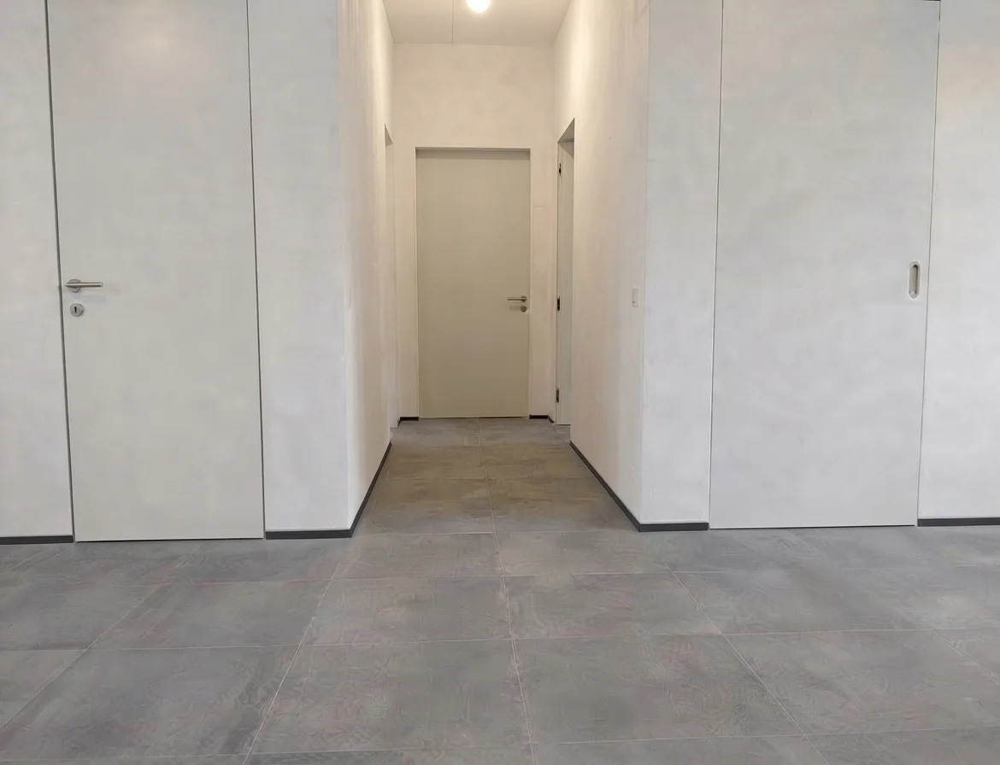

صور للشادو جاب والأبواب المخفية





الأسئلة الشائعة وتفاصيل التنفيذ الهندسي
🚪 متوفر لدينا خدمة توريد وتركيب الأبواب المخفية (Hidden Doors)
نوفر خدمة توريد وتركيب أنظمة الأبواب المخفية ، حيث يتم دمج حلق الباب المخفي مع بروفايلات الشادو جاب والجدار للحصول على مظهر مستوٍ تماماً بدون أي برور ظاهرة.
📋 ما هي خطوات ومراحل تركيب الوزرة المخفية أو الشادو جاب؟
يتم التركيب عبر تفريغ الجزء السفلي من الجدران بارتفاع يتراوح بين 10 إلى 15 سم وبعمق يتراوح بين 2 إلى 3 سم أثناء مرحلة المحارة (اللياسة)، ثم يتم تثبيت بروفيل ألومنيوم الشادو جاب ميكانيكياً. بعد الانتهاء من تركيب الأرضيات، يتم تركيب قطع الوزرة داخل التجويف باستخدام الغراء لضمان استوائها تماماً مع الحائط.
💎 لماذا ينصح باستخدام قطاع مارجينز (Margins) في تنفيذ الشادو جاب؟
نحن في SHADOW FIX ننصح بقطاعات مارجينز (Margins) لأنها توفر دقة هندسية فائقة بفضل متانة خاماتها وتصميمها الذي يضمن استقامة مثالية وتجويفاً حاداً يمنع تراكم الأتربة وثباتاً عالياً ضد التمدد والانكماش.
📱 كيف يمكنك طلب المعاينة وحجز الموعد؟
يمكنك التواصل مع فريق SHADOW FIX مباشرة لطلب المعاينة الفورية واستشارة الموقع من خلال الاتصال أو الضغط على زر الواتساب المباشر لإرسال تفاصيل مشروعك ومساحته.